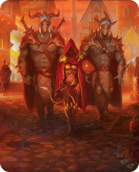
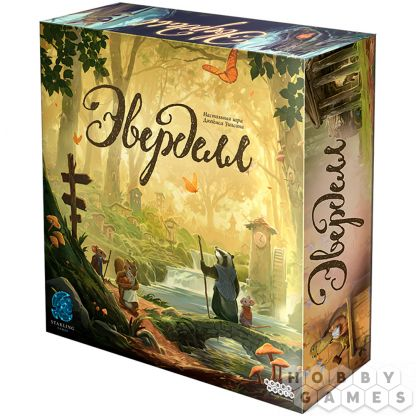
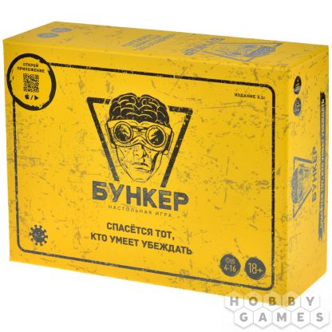
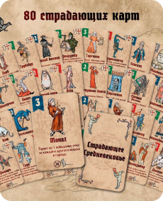

Во что поиграть?

30-120
1-4
Gloomhaven. Мрачная гавань
Невероятная по масштабу, хардкорная тактическая настольная игра, которая отправит вас в кооперативное приключение по подземельям и руинам жестокого и сурового мира, где правда всегда за сильным.

60-120
1-2
Ужас Аркхэма

40-80
1-4
Эверделл

35+
2-5
Каркассон

30-60
4-16
Бункер

20-30
3-6
Страдающее средневековье
Жизнь средневековых людей тяжела и полна страданий. Воины уходят в Крестовые Походы, различные Эпидемии буквально выкашивают на корню целые поселения, а тех немногих, кто остался в живых, с радостью сжигает инквизиция.